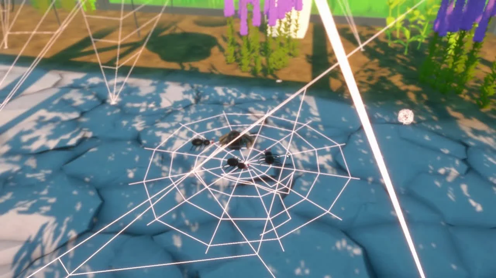
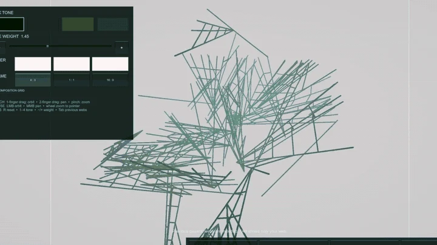

Find anew path.
Explore a greenhouse from a spider’s point of view. The ordinary becomes unfamiliar.
A STUDY IN PLAY — SELECTED GAME PROJECTS
I’m Rong Guo. A collection of games I’ve worked on, and the ideas that bring them to life.
Go straight to the gamesMOVE YOUR CURSOR · FOLLOW THE THREAD
( A JOURNEY IN THREE MOMENTS )



Explore a greenhouse from a spider’s point of view. The ordinary becomes unfamiliar.
Weave routes between objects. Hunt, return and build on the paths you leave behind.
The web begins as a tool. Seen as a whole, every journey becomes part of an artwork.
( SELECTED WORK )
One featured project. Two spaces for what comes next.
A place for a future game project. Details, imagery and a case study will appear here.
A place for a future game project. Details, imagery and a case study will appear here.
( BEHIND THE WORK )
This portfolio brings together the games I take part in and the ideas behind them. Each project leaves room for the work itself, the process and my contribution.
Wonder Webby is a team project. My individual responsibilities will be added to its project page.